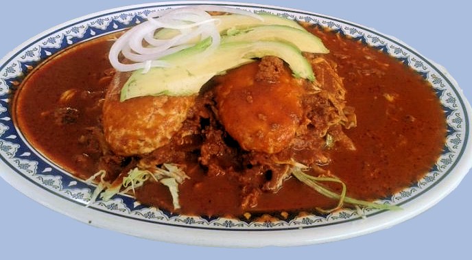

Chancla
La chancla es un panecillo preparado con masa de harina de trigo fermentada con pulque, cuya forma se asemeja a una chancla o lengüeta. Posee una consistencia y una textura similar a la del pan árabe, con la diferencia que las chanclas son infladas al centro, lo cual permite abrirlas y rellenaras. Existen dos tamaños, algunas miden 9 centímetros de largo por 6.5 de ancho, mientras que las más grandes miden aproximadamente 17 centímetros de largo por 9 de ancho. Son similares las tortas ahogadas de Jalisco, ya que se rellenan con carne o algún otro ingrediente y se bañan con salsa.
Es un plato típico de Puebla y Tlaxcala, en México, que consiste en un pan bañado en una salsa de chile, con carne molida de res, lechuga, cebolla y aguacate.
Elaboración
Primeramente se fríe chorizo y se agrega carne molida de res unos minutos después.
Ambos ingredientes deben cocerse bien mientras que en una licuadora se muele jitomate, chiles de árbol, ajo, comino, sal y pimienta.
Después, en una olla se calienta la salsa para que espese. Por último, se corta el pan a la mitad y se rellena con la carne, aguacate, lechuga y cebolla fileteada o en aro, antes de hundirla en el adobo.
Para servirla, se coloca en un plato hondo para bañarla con un poco más de adobo y, se puede agregar queso y crema.
Aunque se trata de un antojito, los ingredientes que conforman la chancla contienen vitamina C, D, A y E.